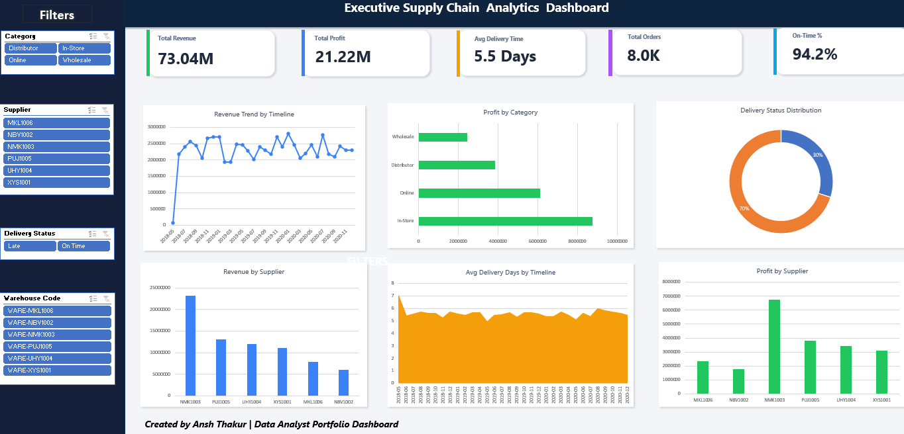

SQL · Python · Excel · Power BI
Supply Chain Performance Analysis
Business problem: Half of all orders arrive late and $41M of revenue is exposed. Is that one bad warehouse — or the entire network?
50.5%
On-time rate (≤5 days target)
$41.0M
Revenue on late orders
0.08%
Variance between warehouses
37.4%
Average profit margin
The answer surprised the brief: no single warehouse is at fault. Only 0.08% of delivery-time variance sits between sites — the lateness is systemic, not localisable. NMK1003 tops the raw late-order count because it handles 31.4% of all volume, not because it is slow. A per-site improvement project would have fixed nothing.
Python
Pandas
MySQL
Window Functions
Excel VBA
openpyxl
Power BI